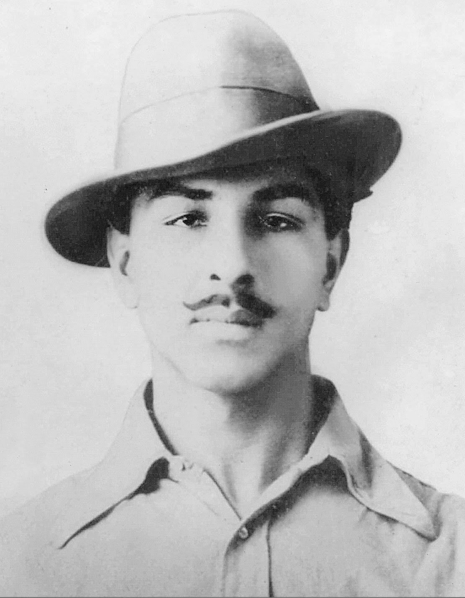

Bhagat Singh
27 September 1907 – 23 March 1931
The Revolutionary Icon
Early Life
Born in Banga, Punjab (now in Pakistan), Bhagat Singh grew up in a family of freedom fighters. The Jallianwala Bagh massacre (1919) deeply affected him. He studied at the National College in Lahore, where he was drawn to socialist and anarchist ideas.
Revolutionary Activities
In 1928, Bhagat Singh and his associates plotted to avenge the death of Lala Lajpat Rai. In 1929, he and Batukeshwar Dutt threw bombs in the Central Legislative Assembly, not to kill but to make the deaf hear — as he put it. He courted arrest and used the trial as a platform to propagate revolutionary ideals.
Hunger Strike
In prison, Bhagat Singh led a 116-day hunger strike demanding better treatment for political prisoners. The strike drew national attention and turned him into a household name across India.
Martyrdom
On 23 March 1931, at age 23, Bhagat Singh was executed by hanging along with Rajguru and Sukhdev. He went to the gallows smiling, kissing the noose, and shouting "Down with British imperialism!"
Legacy
Bhagat Singh became the most iconic martyr of India's freedom struggle. His courage, intellectual depth, and unwavering commitment to justice continue to inspire millions. Unlike sectarian revolutionaries, his vision included a secular, socialist, and egalitarian India.